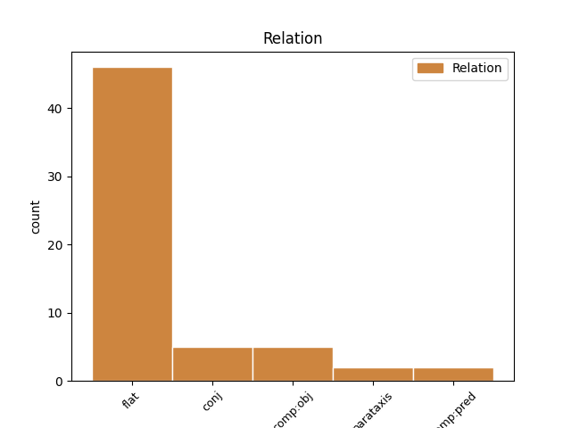
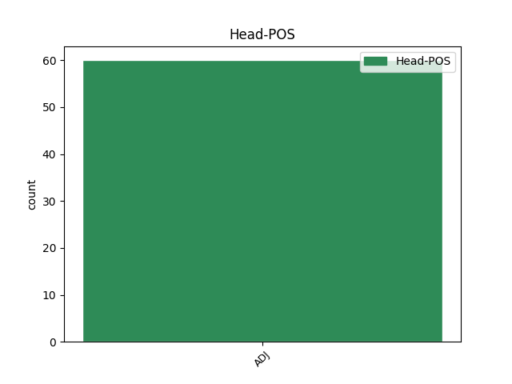
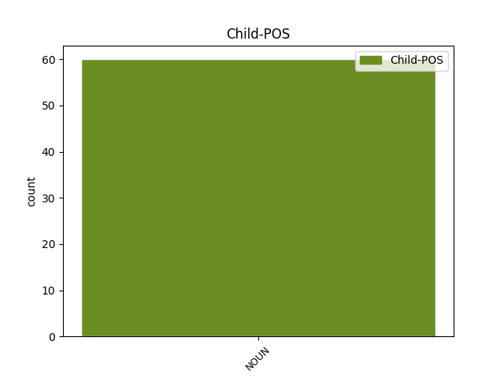

Distribution of features within this leaf



Agreement Rules sorted by frequency.
- When the dependent token is the flat multiword expression(flat) of the head token, and the head token is ADJ and the dependent token is NOUN.
1 Univerzitet _ _ _ _ 0 _ _ _
2 Svetog _ _ _ _ 0 _ _ _
3 Ćirila _ _ _ _ 0 _ _ _
4 i _ _ _ _ 0 _ _ _
5 Metodija _ _ _ _ 0 _ _ _
6 u _ _ _ _ 0 _ _ _
7 Skoplju _ _ _ _ 0 _ _ _
8 otvoriće _ _ _ _ 0 _ _ _
9 četiri _ _ _ _ 0 _ _ _
10 odeljenja _ _ _ _ 0 _ _ _
11 -- _ _ _ _ 0 _ _ _
12 za _ _ _ _ 0 _ _ _
13 studije _ _ _ _ 0 _ _ _
14 kompjuterskih _ _ _ _ 0 _ _ _
15 nauka _ _ _ _ 0 _ _ _
16 , _ _ _ _ 0 _ _ _
17 poslovne _ _ _ _ 0 _ _ _
18 administracije _ _ _ _ 0 _ _ _
19 , _ _ _ _ 0 _ _ _
20 diplomatije _ _ _ _ 0 _ _ _
21 i _ _ _ _ 0 _ _ _
22 poljoprivrede _ _ _ _ 0 _ _ _
23 -- _ _ _ _ 0 _ _ _
24 u _ _ _ _ 0 _ _ _
25 Abu _ _ _ _ 0 _ _ _
26 Dabiju _ _ _ _ 0 _ _ _
27 , _ _ _ _ 0 _ _ _
28 u _ _ _ _ 0 _ _ _
29 Ujedinjenim ujedinjen ADJ Agpmply Case=Loc|Definite=Def|Degree=Pos|Gender=Masc|Number=Plur 0 _ _ _
30 Arapskim _ _ _ _ 0 _ _ _
31 Emiratima emirat NOUN Ncmpl Case=Loc|Gender=Masc|Number=Plur 29 flat _ SpaceAfter=No
32 . _ _ _ _ 0 _ _ _
1 Na _ _ _ _ 0 _ _ _
2 Kosovu _ _ _ _ 0 _ _ _
3 , _ _ _ _ 0 _ _ _
4 još _ _ _ _ 0 _ _ _
5 uvek _ _ _ _ 0 _ _ _
6 nerešeni _ _ _ _ 0 _ _ _
7 nacionalni nacionalan ADJ Agpmpny Case=Nom|Definite=Def|Degree=Pos|Gender=Masc|Number=Plur 0 _ _ _
8 i _ _ _ _ 0 _ _ _
9 problemi problem NOUN Ncmpn Case=Nom|Gender=Masc|Number=Plur 7 conj _ _
10 statusa _ _ _ _ 0 _ _ _
11 , _ _ _ _ 0 _ _ _
12 kao _ _ _ _ 0 _ _ _
13 i _ _ _ _ 0 _ _ _
14 široka _ _ _ _ 0 _ _ _
15 reforma _ _ _ _ 0 _ _ _
16 institucija _ _ _ _ 0 _ _ _
17 uslovili _ _ _ _ 0 _ _ _
18 su _ _ _ _ 0 _ _ _
19 da _ _ _ _ 0 _ _ _
20 primarni _ _ _ _ 0 _ _ _
21 metod _ _ _ _ 0 _ _ _
22 privatizacije _ _ _ _ 0 _ _ _
23 bude _ _ _ _ 0 _ _ _
24 lizing _ _ _ _ 0 _ _ _
25 preduzeća _ _ _ _ 0 _ _ _
26 u _ _ _ _ 0 _ _ _
27 društvenoj _ _ _ _ 0 _ _ _
28 svojini _ _ _ _ 0 _ _ _
29 na _ _ _ _ 0 _ _ _
30 99 _ _ _ _ 0 _ _ _
31 godina _ _ _ _ 0 _ _ _
32 . _ _ _ _ 0 _ _ _
1 " _ _ _ _ 0 _ _ _
2 Svesni svesni ADJ Agpmpny Case=Nom|Definite=Def|Degree=Pos|Gender=Masc|Number=Plur 0 _ _ _
3 smo _ _ _ _ 0 _ _ _
4 napora napor NOUN Ncmpg Case=Gen|Gender=Masc|Number=Plur 2 comp:obj _ _
5 koje _ _ _ _ 0 _ _ _
6 je _ _ _ _ 0 _ _ _
7 turska _ _ _ _ 0 _ _ _
8 vlada _ _ _ _ 0 _ _ _
9 uložila _ _ _ _ 0 _ _ _
10 da _ _ _ _ 0 _ _ _
11 bi _ _ _ _ 0 _ _ _
12 ojačala _ _ _ _ 0 _ _ _
13 BiH _ _ _ _ 0 _ _ _
14 na _ _ _ _ 0 _ _ _
15 putu _ _ _ _ 0 _ _ _
16 evroatlantske _ _ _ _ 0 _ _ _
17 integracije _ _ _ _ 0 _ _ _
18 , _ _ _ _ 0 _ _ _
19 a _ _ _ _ 0 _ _ _
20 tu _ _ _ _ 0 _ _ _
21 smatramo _ _ _ _ 0 _ _ _
22 da _ _ _ _ 0 _ _ _
23 je _ _ _ _ 0 _ _ _
24 svaka _ _ _ _ 0 _ _ _
25 pomoć _ _ _ _ 0 _ _ _
26 , _ _ _ _ 0 _ _ _
27 posebno _ _ _ _ 0 _ _ _
28 ta _ _ _ _ 0 _ _ _
29 koju _ _ _ _ 0 _ _ _
30 nude _ _ _ _ 0 _ _ _
31 prijateljske _ _ _ _ 0 _ _ _
32 zemlje _ _ _ _ 0 _ _ _
33 , _ _ _ _ 0 _ _ _
34 dobrodošla _ _ _ _ 0 _ _ _
35 " _ _ _ _ 0 _ _ _
36 , _ _ _ _ 0 _ _ _
37 navodi _ _ _ _ 0 _ _ _
38 se _ _ _ _ 0 _ _ _
39 u _ _ _ _ 0 _ _ _
40 saopštenju _ _ _ _ 0 _ _ _
41 . _ _ _ _ 0 _ _ _
1 Italijanski _ _ _ _ 0 _ _ _
2 velemajstor _ _ _ _ 0 _ _ _
3 Fabijano _ _ _ _ 0 _ _ _
4 Karuana _ _ _ _ 0 _ _ _
5 , _ _ _ _ 0 _ _ _
6 16 _ _ _ _ 0 _ _ _
7 , _ _ _ _ 0 _ _ _
8 proglašen proglasiti ADJ Appmsnn Case=Nom|Definite=Ind|Degree=Pos|Gender=Masc|Number=Sing|VerbForm=Part|Voice=Pass 0 _ _ _
9 je _ _ _ _ 0 _ _ _
10 najboljim _ _ _ _ 0 _ _ _
11 igračem igrač NOUN Ncmsi Case=Ins|Gender=Masc|Number=Sing 8 comp:pred _ _
12 na _ _ _ _ 0 _ _ _
13 turniru _ _ _ _ 0 _ _ _
14 . _ _ _ _ 0 _ _ _
1 Takođe _ _ _ _ 0 _ _ _
2 ove _ _ _ _ 0 _ _ _
3 nedelje nedelja NOUN Ncfsg Case=Gen|Gender=Fem|Number=Sing 7 parataxis _ SpaceAfter=No
4 : _ _ _ _ 0 _ _ _
5 u _ _ _ _ 0 _ _ _
6 Turskoj _ _ _ _ 0 _ _ _
7 završene završiti ADJ Appfpny Case=Nom|Definite=Def|Degree=Pos|Gender=Fem|Number=Plur|VerbForm=Part|Voice=Pass 0 _ _ _
8 Crnomorske _ _ _ _ 0 _ _ _
9 igre _ _ _ _ 0 _ _ _
10 , _ _ _ _ 0 _ _ _
11 a _ _ _ _ 0 _ _ _
12 Srpkinja _ _ _ _ 0 _ _ _
13 Jelena _ _ _ _ 0 _ _ _
14 Janković _ _ _ _ 0 _ _ _
15 osvojila _ _ _ _ 0 _ _ _
16 titulu _ _ _ _ 0 _ _ _
17 šampiona _ _ _ _ 0 _ _ _
18 u _ _ _ _ 0 _ _ _
19 igri _ _ _ _ 0 _ _ _
20 mešovitih _ _ _ _ 0 _ _ _
21 parova _ _ _ _ 0 _ _ _
22 na _ _ _ _ 0 _ _ _
23 Vimbldonu _ _ _ _ 0 _ _ _
24 . _ _ _ _ 0 _ _ _
Disagree Examples:
1 Turskim _ _ _ _ 0 _ _ _
2 Zakonom _ _ _ _ 0 _ _ _
3 o _ _ _ _ 0 _ _ _
4 fondacijama _ _ _ _ 0 _ _ _
5 , _ _ _ _ 0 _ _ _
6 koji _ _ _ _ 0 _ _ _
7 je _ _ _ _ 0 _ _ _
8 usvojen _ _ _ _ 0 _ _ _
9 1936 _ _ _ _ 0 _ _ _
10 , _ _ _ _ 0 _ _ _
11 naloženo _ _ _ _ 0 _ _ _
12 je _ _ _ _ 0 _ _ _
13 da _ _ _ _ 0 _ _ _
14 sve _ _ _ _ 0 _ _ _
15 fondacije _ _ _ _ 0 _ _ _
16 moraju _ _ _ _ 0 _ _ _
17 da _ _ _ _ 0 _ _ _
18 podnesu _ _ _ _ 0 _ _ _
19 imovinsku _ _ _ _ 0 _ _ _
20 izjavu _ _ _ _ 0 _ _ _
21 , _ _ _ _ 0 _ _ _
22 koja _ _ _ _ 0 _ _ _
23 uključuje _ _ _ _ 0 _ _ _
24 sve _ _ _ _ 0 _ _ _
25 nekretnine _ _ _ _ 0 _ _ _
26 i _ _ _ _ 0 _ _ _
27 drugu _ _ _ _ 0 _ _ _
28 imovinu _ _ _ _ 0 _ _ _
29 koju _ _ _ _ 0 _ _ _
30 poseduju _ _ _ _ 0 _ _ _
31 , _ _ _ _ 0 _ _ _
32 dok _ _ _ _ 0 _ _ _
33 su _ _ _ _ 0 _ _ _
34 1974. _ _ _ _ 0 _ _ _
35 godine _ _ _ _ 0 _ _ _
36 , _ _ _ _ 0 _ _ _
37 u _ _ _ _ 0 _ _ _
38 odvojenoj _ _ _ _ 0 _ _ _
39 presudi _ _ _ _ 0 _ _ _
40 Kasacionog _ _ _ _ 0 _ _ _
41 suda _ _ _ _ 0 _ _ _
42 , _ _ _ _ 0 _ _ _
43 manjinskim _ _ _ _ 0 _ _ _
44 grupama grupa NOUN Ncfpd Case=Dat|Gender=Fem|Number=Plur 45 comp:obj _ _
45 zabranjeni zabraniti ADJ Appmpny Case=Nom|Definite=Def|Degree=Pos|Gender=Masc|Number=Plur|VerbForm=Part|Voice=Pass 0 _ _ _
46 kupovina _ _ _ _ 0 _ _ _
47 i _ _ _ _ 0 _ _ _
48 registrovanje _ _ _ _ 0 _ _ _
49 nove _ _ _ _ 0 _ _ _
50 imovine _ _ _ _ 0 _ _ _
51 . _ _ _ _ 0 _ _ _
1 Tursku turski ADJ Agpfsay Case=Acc|Definite=Def|Degree=Pos|Gender=Fem|Number=Sing 0 _ _ _
2 Republiku _ _ _ _ 0 _ _ _
3 Severni _ _ _ _ 0 _ _ _
4 Kipar kipar NOUN Ncmsan Animacy=Inan|Case=Acc|Gender=Masc|Number=Sing 1 flat _ _
5 priznaje _ _ _ _ 0 _ _ _
6 samo _ _ _ _ 0 _ _ _
7 Ankara _ _ _ _ 0 _ _ _
8 . _ _ _ _ 0 _ _ _
1 Kultura kultura NOUN Ncfsn Case=Nom|Gender=Fem|Number=Sing 7 parataxis _ _
2 i _ _ _ _ 0 _ _ _
3 društvo _ _ _ _ 0 _ _ _
4 : _ _ _ _ 0 _ _ _
5 Rumunski _ _ _ _ 0 _ _ _
6 dvorac _ _ _ _ 0 _ _ _
7 vraćen vratiti ADJ Appmsnn Case=Nom|Definite=Ind|Degree=Pos|Gender=Masc|Number=Sing|VerbForm=Part|Voice=Pass 0 _ _ _
8 u _ _ _ _ 0 _ _ _
9 vlasništvo _ _ _ _ 0 _ _ _
10 Habzburga _ _ _ _ 0 _ _ _